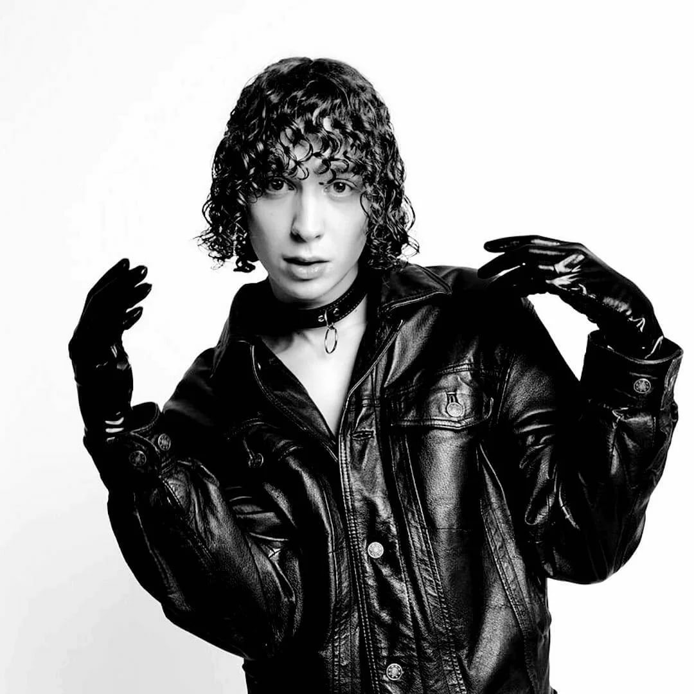

Биография
Несмотря на то, что музыкант, скрывающийся под необычным псевдонимом вышел покурить, знаком не каждому слушателю, он успешно гастролирует по стране и регулярно выпускает новые альбом. И это притом, что творческий путь парень начал в мае 2017-го, когда состоялся релиз дебютного мини-сборника «Мода».
Музыка
Жанр музыки, в котором творит молодой певец, — абстрактный хип-хоп с элементами техно и электро. Тексты весьма специфические, замысловатые, порой агрессивные, поэтому не каждому могут прийтись по душе. В них часто поднимаются острые темы наркотических веществ, непростых отношений с противоположным полом и прочих невеселых реалий повседневности.Вплотную заниматься рэпом парень начал в 2015-м неожиданно для самого себя. Как всякие подростки, Юра вместе с друзьями собирался в свободное время на квартире, весело проводил время и фристайлил. Постепенно импровизации становились лучше и качественнее, а тяга к творчеству — сильнее. В итоге однажды Авангард пришел поддержать товарищей в ночной клуб More Music Club на вечеринке UnderWave, а после нее вернулся домой и засел за написание собственных треков.Дебютный релиз, как упоминалось выше, состоялся в мае 2017-го — в нем талантливого артиста поддержал битмейкер из объединения Dead Dynasty, а второй «Авангард» — пятью месяцами позже. Между выпусками мини-пластинок хип-хопер успел «раскачать» зал перед выступлением Pharaoh и записать «совместку» с Lil Morty.В 2018-м украинец пополнил дискографию парой альбомов — «Отвратительно» и «Никогда». В том же году свет увидели и отдельные треки, не вошедшие в сборники, — «Мы все умираем одни», «Живот», «Засыпай», «Не дай погаснуть», «Наслаждение», «Беспредел», «Ничего», «Легенды лета» и «Урод».В 2019-м настал черед пластинок «Север» и «Память», презентация последней состоялась 23 августа в Москве, а на следующий день — в Санкт-Петербурге. 5 мая на ютьюб-канале певца появился клип на трек «Никому не нужны».Что касается выбранного псевдонима, тот тут помог реальный факт — после одного из фристайлов парень вышел покурить на лестничную клетку. И тут в голову пришла идея так назваться. Но при этом исполнитель знаком со знаменитым выражением о смерти Виктора Цоя («Цой не умер, а просто вышел покурить») и иногда публикует собственные фото в футболке с лидером «Кино» под этой цитатой.